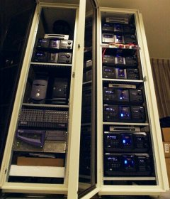

|
|
|
 LAMP's RBX1600 jukebox
array |
StreetFire's contribution, which includes the first 10 manufactured units of its RBX1600 music server, development software, prototype hardware, and support, will allow LAMP to manage a library of 4,000 CDs in consumer stereo jukeboxes.
"Thanks to StreetFire's help, MIT students and faculty will again be able to access LAMP's library of music 24 hours a day, from all across campus," said Keith Winstein, a graduate student in Electrical Engineering and Computer Science. "We are very grateful for their contribution."
Winstein and Josh Mandel, a senior in the same major, researched several ways of making a collection of 4,000 CDs available for LAMP's users, who will access the CDs by acting as disc jockeys and broadcasting music over MIT's internal cable-television system. Using the RBX1600 to manage consumer-quality jukeboxes would cost between $0.90 and $2.40 per CD, Winstein and Mandel calculated. By contrast, the cost of enough computer CD-ROM jukeboxes to hold 4,000 CDs was about $100,000, or $25.00 per CD, the students found.
StreetFire has also donated development software that enabled Mandel and Winstein to extend the functionality of the RBX1600 to support LAMP. The RBX1600 uses a version of the GNU/Linux operating system, which Winstein and Mandel were able to modify with StreetFire's help. As part of the grant, the students are contributing their extensions back to StreetFire in the public domain.
"All of the RBX1600 software is free software, which makes it easy to modify, but we were very fortunate to have [StreetFire Founder] Stephen Street's help as well," Mandel said. "He worked tirelessly to help us make our software run on the RBX1600."
ABOUT LAMP
The Library Access to Music Project is working to create a 24-hour academic music library that provides instant access to its collection in MIT classrooms and dormitories through MIT's cable television system. LAMP was started in 2001 by two MIT students, Keith Winstein and Josh Mandel, who are researching the effects of a more-accessible music library on education and music-listening behavior at MIT. LAMP is supported by a $60,000 grant from MIT iCampus, the MIT-Microsoft Alliance. Winstein and Mandel are advised by Professor of Computer Science and Engineering Hal Abelson.
In October 2003, LAMP first opened its electronic music library and briefly allowed MIT students and faculty to access about 48,000 MP3s, broadcast on-demand over MIT's cable television system. After MIT announced the opening on October 27, 2003, the company that had sold LAMP its MP3 files said that it had not had permission to do so. Accordingly, LAMP announced on October 31, 2003 that it was temporarily closing the library until it could be sure that the recordings in LAMP's collection were prepared under authorization from the copyright owners. LAMP plans to re-open at MIT later this fall and will publish the complete plans and software for the system as free software at http://lamp.mit.edu.
ABOUT STREETFIRE SOUND LABS
StreetFire Sound Labs creates smart, open devices for home entertainment networking and media management. StreetFire's premier product, the RBX1600 music server, effortlessly manages a vast music library by network-enabling inexpensive Sony CD jukeboxes and integrating CD- and hard drive-based music. The ground-breaking RBX1600 combines the power of open source software with hardware HackPoints(TM) to bridge the stereo and computing worlds and enable unlimited customization. StreetFire Sound Labs is a privately held company in San Francisco, with additional information at http://www.streetfiresound.com.
ABOUT MIT ICAMPUS
MIT iCampus, the MIT-Microsoft Alliance, is a 5-year, $25 million initiative to improve the quality of higher education through a combination of information technology tools and innovative teaching methods. MIT researchers and Microsoft software engineers are working together to enable a host of cutting edge technologies -- wireless, streaming video, collaborative software, simulation, virtual reality, and more - to facilitate the delivery of engaging, interactive, team-based, project-oriented, hands-on, and student-driven learning experiences. Learn more at web.mit.edu/icampus.
# # #
{kind=link}